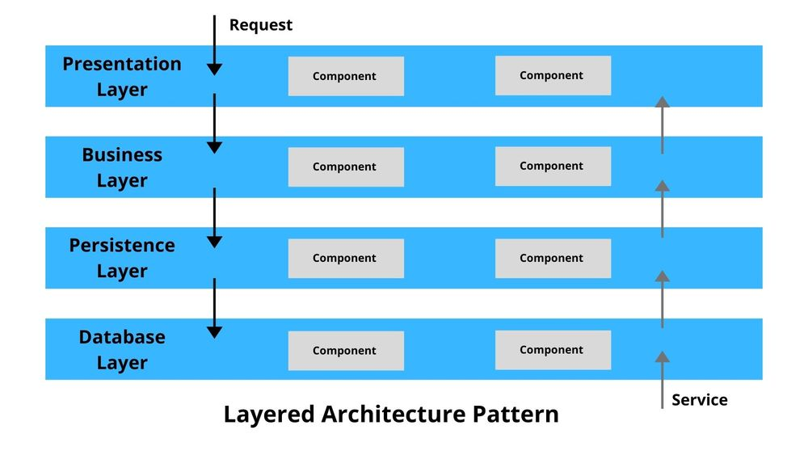

Preliminary notions for Software Development
Software Engineering
(for Intelligent Distributed Systems)
A.Y. 2024/2025
Giovanni Ciatto
Compiled on: 2025-02-17 — printable version
Motivation and goals
-
In order to put everybody on the same page…
-
… we are going to recall some basic notions and technical aspects related to software development, namely:
- the command line
- the anatomy of a software project in Python
- the role of modelling in SE
- ubiquitous (w.r.t. SE) notions such as interfaces and runtimes
The command-line
(a.k.a. the shell, the terminal, the console)
First contact with the terminal
- Open your terminal application
- Either “PowerShell”, “Command Prompt”, “Terminal” on Windows
- “iTerm” or “Terminal” on macOS
- “Konsole” or “Terminal” on Linux
The terminal is a text-based interface to the operative system (OS). Each terminal application is executing a shell program
The shell is a program that has a simple job: REPL (Read, Evaluate, Print, Loop)
- it reads a command from the user
- it evaluates the command
- it prints the result
- it loops back to step 1, unless the user explicitly asks to exit
- Write a few simple commands and observe the effect
ls(ordiron Windows): should list the files in the current directoryecho "Hello World": should print “Hello World” on the screenexit: should close the shell (and the terminal application, if it’s the only shell)
Why the terminal?
Mostly, to look hacker-ish in the eyes of normal people üòé
(just kidding)
-
The terminal is a powerful tool for software development
-
It allows developers to interact with the OS in a precise, minimal, and efficient way
-
Most operations in software development can, and often should, be performed from the terminal
The terminal may accept commands:
- interactively, from the user
- from a script, which is a file containing commands to be executed by a shell
Developers are inherently lazy
Developers’ mindset:
If a person can do it manually via the shell, then a script can do it automatically
If a script can do it automatically, then that’s the way of doing it
- these are the basic principles behind automation
- a part from time-saving and precision in execution, automation enables reproducibility of the process
- experts can distill their operational knowledge into scripts
- scripts can be called (i.e. invoked, executed) by non-experts
To automate or not to automate?
Beware, ‘cause scripts are software too, and they require engineering:

- There is an implict trade-off between
- the time spent to automate a task (i.e. coding)
- and the time saved w.r.t. doing the task manually
This is not really the case of everyday programming tasks, but let’s keep this in mind
Why the terminal in this course?
-
We are going to use the terminal for:
- running Python scripts
- managing Python projects (version tracking, tests, releases, etc.)
-
Understaing how to do stuff via the terminal is a reusable skill
- while IDE and GUIs evolve quickly, and every team has its own preferences…
- command line tools are very stable and widely adopted
-
We encourage you to read the following lectures from The MIT’s “Missing Semester of Your CS Education”:
Stuff you need to know about the shell (pt. 1)
- There exist essentially two sorts of shells:
- the Unix-like shells (e.g.,
bash,zsh,fish,ksh,csh,tcsh, etc.) used by Linux and macOS- and, to some extent, by Windows
- the Windows shells (e.g.,
cmd,PowerShell) which are different from the Unix-like ones, and from each other
- the Unix-like shells (e.g.,
Whenever working with the terminal, first thing to do is to understand which shell you are using
- if you’re on Linux, you’re probably using
bashorzsh- if you’re on macOS, you’re probably using
zshorbash- if you’re on Windows, you’re probably using
cmdif you opened the Command Prompt applicationPowerShellis you opened the PowerShell applicationbashif are using the Windows Subsystem for Linux (WSL) or Git Bash
Stuff you need to know about the shell (pt. 2)
-
Whenver you open a shell, the shell is “in” a directory, which is called the current working directory (CWD)
- by default, commands operate on the CWD (i.e. they read and write files in the CWD)
- that directory should be shown somewhere in the shell’s prompt
- if not shown, you can always ask the shell to show it, via some command
-
If one wants to operate on a file in a different directory…
-
… they have to change the CWD
- this is done via the
cdcommand (change directory)
- this is done via the
-
… without changing the CWD, they have to specify the path to the file
- this is done via the absolute or relative path to the file
-
Stuff you need to know about the shell (pt. 3)
A path is a string that represents the location of a file or a directory in the file system
Beware: path-separator is different among Windows (
\) and other OS (/),and we only use
/in the slides
-
A relative path is a path that is relative to the CWD
- e.g.,
./file.txtrefers to a file namedfile.txtin the CWD - e.g.,
../file.txtrefers to a file namedfile.txtin the parent directory of the CWD - e.g.,
./dir/file.txtrefers to a file namedfile.txtin a sub-directory of CWD, nameddir
- e.g.,
-
An absolute path is a path that starts from the root of the file system
- on Unix-like systems, the root is
/- e.g.
/home/giovanni/file.txtrefers to a file namedfile.txtingiovanni’s home directory on Linux - e.g.
/Users/giovanni/file.txtrefers to a file namedfile.txtingiovanni’s home directory on macOS
- e.g.
- on Windows, there are several roots, one per drive (e.g.,
C:,D:, etc.)- e.g.
C:\Users\giovanni\file.txtrefers filefile.txtingiovanni’s home directory, on driveC: - e.g.
D:\Data\Photos\profile.jpgrefers fileprofile.jpgin theData\Photosdirectory, on driveD:
- e.g.
- on Unix-like systems, the root is
Terminal cheat sheet
| Operation | *nix | win |
|---|---|---|
| Print the current directory location | pwd |
echo %cd% |
Remove the file foo (does not work with directories) |
rm foo |
del foo |
Remove directory bar |
rm -r bar |
del bar |
Change disk (e.g., switch to D:) |
n.a., single root (/) |
D: |
Move to the subdirectory baz |
cd baz |
cd baz |
| Move to the parent directory | cd .. |
cd.. |
Move (rename) file foo to baz |
mv foo baz |
move foo baz |
Copy file foo to baz |
cp foo baz |
copy foo baz |
Create a directory named bar |
mkdir bar |
md bar |
Stuff you need to know about the shell (pt. 4)
-
Most commands have arguments
- roughly, whatever you can write after the command name is an argument
-
If you think of commands as functions, then arguments are the parameters of the function
- and the command is the function name
- and the printed output is the return value
- simply, no parentheses are required by default for “invoking” the function
-
Consider the
lscommandlslists the files in the CWD, as an inline listls -llists the files in the CWD, as a detailed listls -l /path/to/dirlists the files in the/path/to/dirdirectory, as a detailed list
How the hell can I memorise all these commands?
You should not.
-
Just try to grasp the basic idea of how shells work
-
Just memorise that there exist a way to do
Xvia the shell- and all relevant
Xs
- and all relevant
-
You will eventually memorise the syntax of most frequent commands
-
For the rest, you can always look up the documentation
- or the Web, or ask someone, there including ChatGPT or StackOverflow
- but please, do not copy&paste code that you do not understand
- or the Web, or ask someone, there including ChatGPT or StackOverflow
-
Most commands support asking for help when one does not remeber the syntax
- e.g.
COMMAND_NAME --helporCOMMAND_NAME -hmostly used on Unix-like systems - e.g.
man COMMAND_NAMEmostly used on Unix-like systems (man is for “manual”) - e.g.
COMMAND_NAME /?mostly used on Windows - e.g.
Get-Help COMMAND_NAMEmostly used on Windows
- e.g.
Do not waste your memory, learn how to look up the documentation instead
About interactive commands (pt. 1)
-
Some commands are interactive
- when you start them, they to not terminate immediately
- instead, they wait for user input
-
In this case we say that the command is just starting a process
- “process” is a technical term for a program that is running
- an app is commonly a process attached to a graphical user interace (GUI) shown on the screen
-
There is no difference among interactive and non-interactive processes, for the shell
- a command is used to start the process
- the command will stay alive,
- and possibly consume the user’s input
- and possibly produce some output
- for some reason, the process may eventually terminate
- e.g., because of some input from the user, some error, or some condition met
- when that the case, control is returned to the shell
- which will ask for more commands, as usual
About interactive commands (pt. 2)
-
Upon termination, each command returns an exit code (i.e. a non-negative integer)
0means “everything went fine”- any other number means “something went wrong” (each number is a different error code)
- so the shell always knows if the last command was successful or not
-
When using the shell interactively:
- pay attention to whether the last command you wrote was successful or not
-
When programming the shell in a script:
- you can check the exit code of the last command via the special variable
$? - you can use the
ifstatement to check the exit code and act accordingly
- you can check the exit code of the last command via the special variable
About interactive processes (pt. 1)
In the eyes of the OS, any process can be modelled as follows:

-
i.e. a black box
- consuming a stream of input data from the standard input channel (
stdin) - producing a stream of output data to the standard output channel (
stdout) - and, possibly, producing a stream of error data to the standard error stream (
stderr)
- consuming a stream of input data from the standard input channel (
-
more channels may be opened by the process, e.g. when reading / writing files
a stream is an unlimited sequence of bytes (or characters)
- this may represent anything having a digital representation (e.g. a file, a network connection, a device, etc.)
About interactive processes (pt. 2)
Most commonly, for interactive processes, the situation is as follows:

- all three streams are connected to the terminal by default
- so the process reads input from the keyboard
- and writes output to the terminal
- and writes errors to the terminal (sometimes, errors are colored differently)
About interactive processes (pt. 3)
Example: the nano command
nanois a simple, interactive, text editor for the terminal
-
Open a shell, and run the following command
nano myfile.txt -
This should transform the terminal into a text editor, editing the file
myfile.txt- you can write some text in there, e.g.
Hello World
- you can write some text in there, e.g.
-
Then, press Ctrl+O to save the file
- you will be asked to confirm the file name, press Enter
-
Then, press Ctrl+X to exit the editor
-
You should be back to the shell, and the file
myfile.txtshould have been created- you can verify that, via the
lscommand
- you can verify that, via the
The Python command
-
Python is a programming language, namely, the reference programming language we use in the course
-
We will operate Python stuff via the terminal, using the
pythoncommand -
The command’s behaviour is very different depending on which and how many arguments are passed:
pythonwith no arguments starts an interactive Python shell- i.e. yet another shell, but using the Python syntax
python FILENAMEstarts a Python process that executes the Python code in the fileFILENAMEpython -m MODULEstarts a Python process that executes the module namedMODULE- we’ll see what a module is, later in the course
python -c "CODE"starts a Python process that executes the Python code in the string"CODE"- e.g.
python -c "print('Hello World')"
- e.g.
-
Use
python --helpto inspect the help of thepythoncommand, and see all the options -
When using Python, always remember to check the version of the Python interpreter you are using
python --versionorpython -V
Code and code organization
(in Python)
Running example (pt. 1)
Let’s say we are going to build a simple calculator app, in Python
Using Kivy for the GUI, we may easily build the following app:
Running example (pt. 2)
The source code for such application is available here:
https://github.com/unibo-dtm-se/compact-calculator
TO-DO list
- Download the code by clicking on the green “Code” button, and then “Download ZIP”
- Unpack the archive in a directory of your choice
- Open the directory in some lightweight IDE like VS Code
- possibly exploit the integrated terminal
- Inspect the content of the directory (e.g. via the terminal, using the
ls -lacommand)- you should notice 4 files:
.python-version(hidden on Unix) textual declaration of the Python version required by the applicationcalculator.py: the source code of the applicationrequirements.txt: a file containing the dependencies of the applicationREADME.md: a file containing the some notes about of the application
- you should notice 4 files:
Running example (pt. 3)
-
Notice that the
calculator.pyfile is a Python script that contains only 46 lines of code -
Have a look to the source code of the
calculator.pyfile- do you recognize any structure in the code?
- do you have any clue about what’s going on in the code?
-
Let’s try to run the application
- open a terminal in the directory of the application (the VS Code is fine)
- run the following command
python calculator.py - you may observe the following output in the terminal:
Traceback (most recent call last): File "/path/to/your/directory/calculator.py", line 1, in <module> from kivy.app import App ModuleNotFoundError: No module named 'kivy'
-
The issue here is that our application depends on some third-party library, namely Kivy
- third-party $\approx$ not written by us + not included Python by default
Running example (pt. 4)
-
The solution is pretty simple: let’s install the missing dependency
- we can do that via the
pipcommand, which is the Python package managerpip install kivy
- we can do that via the
-
After the installation, we can try to run the application again
python calculator.pythis time, the application should start, and you should see the calculator Window
-
play a bit with the application
- ensure it works as expected
- finally, close the Window, and notice that control is returned to the terminal
-
either in the terminal (
ls -la), or in the GUI, you may notice a new sub-directory named__pycache__- with a file named
calculator.cpython-3XXX.pyc(or similar) in it- that is a compilation cache file, generated by the Python interpreter, for our application
- with a file named
Many hidden concepts in this example
-
the notion of library
- i.e. a collection of pre-cooked software be reused in different applications
-
the notion of dependency
- i.e. a piece of software that is required by another piece of software to run
-
the notion of runtime
- i.e. the environment in which a piece of software is executed
-
the notion of package manager
- i.e. a tool that automates the installation of dependencies into a runtime
-
the notion of compilation
- i.e. the process of translating a source code into a machine code that can be executed
Compilation vs. Interpretation of Programs
-
A program is a set of instructions that a computer can execute
-
Computers nowadays follow the Von Neumann architecture
- put it simply, they follow a list of instructions, from some instruction language
- modern CPU producers (Intel, AMD, ARM, etc.) constuct CPU which comply to well known instruction sets (e.g.
x86,amd64,arm, etc.) — different architectures have different instruction sets
- modern CPU producers (Intel, AMD, ARM, etc.) constuct CPU which comply to well known instruction sets (e.g.
- put it simply, they follow a list of instructions, from some instruction language
-
Programming languages are meant to be understood by humans (not by computers)
-
To make a computer understand a program, the program must be translated into machine code
- i.e. a list of instructions in the instruction language of that computer’s CPU
-
The translation procedure is hardware-dependent, and it may vary among OS
- to generalise, we say the translation procedure is platform-dependent
-
There are two main ways to translate a program into machine code:
- compilation: the program is translated into an executable, via some compiler, and then executed
- interpretation: the program is read by an interpreter (i.e. an executable), which executes it
-
The result is the same (the program is executed, i.e. the computer follows the instructions)
- but the implications are different
Compilation vs. Interpretation of Programs (pt. 2)
-
Compilation implies:
- a compiler should be created for each target platform
- each software project should be compiled, for each target platform, before being executed
- execution is potentially faster, as the machine code is optimised for the target CPU
- but higher speed is not guaranteed, and it may be negligible in many cases
- but many application do not require high-speed execution
- the compiler may spot some errors in the program before it is executed
-
Interpretation implies:
- an interpreter should be created for each target platform
- the software can be executed as is on all supported platforms
- one less step in the workflow!
- execution is potentially slower, as the interpreter translates code on the fly
- but the write-test-debug cycle is potentially faster
- the programmer may only spot errors in the program after it is executed
-
Historically, programming languages have been categorised as either compiled or interpreted
- C, C++, Rust, Go, etc. are compiled languages
- Ruby, JavaScript, etc. are interpreted languages
Compilation vs. Interpretation of Programs (pt. 3)
-
Nowadays, the distinction is blurred
- many languages are both compiled and interpreted, there including Python, and Java
- on the surface, they are interpreted
- but the interpreter compiles the code on the fly…
- and saves the compiled version for later re-use
- many languages are both compiled and interpreted, there including Python, and Java
-
As always, mixing opposite approaches may lead to the best of both worlds
- e.g. the interpreter may spot errors in the program before it is executed
- e.g. in then interpretation and compilation are mixed, the interpreter can optimise the machine code in a very fine grained way
-
The idea of saving a hard-to-achieve result for later re-use is called caching
- and it is common trick in software development
-
The CPython interpreter (i.e. the reference Python implementaton) adopts a strategy of this sort
- the .pyc files you met before, are the cache files produced by the Python interpreter
- upon first succesful execution of a script
- the .pyc files you met before, are the cache files produced by the Python interpreter
Libraries (pt. 1)
-
Basically no programmer ever writes an entire application from scratch
- virtually all programmers re-use someone else’s code to do their job
-
One key principle in SE has always been:
Don’t reinvent the wheel
-
SE is essentially about how to write good code, which works well, and can be reused in the future
- let’s design software to be general
- let’s write the code to work well
- let’s give it a name and clearly document how it works (input, output, etc.)
- let’s make it reusable, i.e. referenceable (callable) by other software
-
Collections of reusable code are called libraries
Libraries (pt. 2)
-
All programming languages have a standard library…
- i.e. a collection of reusable code that comes with the language, by default
- e.g. the
mathmodule in Python, thejava.utilpackage in Java, etc. - BTW, Python has one of the richest standard libraries among programming languages
- e.g. the
- most commonly, any two versions of a programming language would have a different standard library
- the syntax of the language may not even change
- i.e. a collection of reusable code that comes with the language, by default
-
… plus some mechanism to install and import third-party libraries
- e.g., in Python, the
pipcommand is used to install third-party libraries - e.g., in Python, the
importstatement is used to import libraries in the script- upon import, the difference among standard and third-party libraries is irrelevant
- e.g., in Python, the
-
The consequences of this “library” idea are manifold
- what libraries are available for Python program to use?
- what third-party libraries can one install?
- what’s the impact of using a third-party library for my application?
- how can one write a library that can be reused by others?
- why should one do that?
Runtime (pt. 1)
-
The runtime is the environment in which a piece of software is executed
- not to be confused with run-time, which is the time when the software is executed
Runtime of a program $\approx$ jargon for “the set of libraries actually available for that program at run-time”
- this commonly includes:
- the standard library of the interpreter executing the
- e.g. Python 3.11’s standard library for our calculator application
- any third-party library installed onto that interpreter
- e.g. Kivy for our calculator application
- the standard library of the interpreter executing the
Dependencies (pt. 1)
-
Developers exploit libraries produced by others to avoid wasting time reinventing the wheel
-
The reasoning is more or less as follows:
- one needs to realise some software for functionality $F$
- writing the code for $F$ requires some effort $E_{scratch} > 0$
- there exist some library $L$ which reduces the effort to $0 < E_{use} < E_{scratch}$
- installing the library requires some effort $E_{install} > 0$
- learning how to use the library requires some effort $E_{learn} > 0$
- in the likely case that $E_{install} + E_{learn} + E_{use} < E_{scratch}$, one should use the library
A dependency among some software $S$ and some other software $L$
occurs when $S$ requires $L$ to work
- requires $\approx$ $S$ needs $L$ to be part of its runtime to be executed
- this is commonly the result of the reasoning above
- for instance, the calculator application depends on the Kivy library, and on the Python 3.11 standard library
Dependencies (pt. 2)
Some definitions related to the notion of dependency:
Transitive dependency: if $S$ depends on $L$, and $L$ depends on $M$, then $S$ transitively depends on $M$
- non-transitive dependencies are called direct dependencies
Dependencies (pt. 3)
Dependency graph of a software $S$: the graph spawned by all the dependencies (direct or transitive) depedencies of $S$
- e.g. the dependency graph of our calculator application includes Kivy and Python 3.11 standard library, and all transitive depedencies of Kivy:
calculator.py ├── Python 3.11.7 └── kivy 2.3.0 ├── docutils * ├── kivy-deps-angle >=0.4.0,<0.5.0 ├── kivy-deps-glew >=0.3.1,<0.4.0 ├── kivy-deps-sdl2 >=0.7.0,<0.8.0 ├── kivy-garden >=0.1.4 │ └── requests * │ ├── certifi >=2017.4.17 │ ├── charset-normalizer >=2,<4 │ ├── idna >=2.5,<4 │ └── urllib3 >=1.21.1,<3 ├── pygments * └── pypiwin32 * └── pywin32 >=223
Package managers and package reporitories
-
To support the extension of runtimes, and therefore the addition of dependencies…
-
… most programming languages come with 2 related tools:
- a package manager, which is a (command-line)-tool to install and manage dependencies, semi-automatically
- package repositories, which are collections of software and metadata about that software, commonly accessible via the Web
-
Packgage $\approx$ a piece of software with a name and a version, and a fixed structure eases installation and reuse
- each package manager/repository subtends a package format, and some installation or publication procedures
-
Package managers commonly support specifying from which repository a dependency should be installed
- yet, each programming language may have its own default package repository
-
In the Python world:
- the Python Package Index (PyPI) is the default software repository, full of open-source Python software
- the
pipcommand is the default package manager, and it is tightly integrated with PyPI- by default
pip install NAMEinstalls the last version of the packageNAMEfrom PyPI
- by default
Dependency declaration
-
It is a good practice to document which dependencies a software relies upon
- names and versions, possibly
-
It is even a better practice to automate the installation of dependencies
- so that they can be restored in automatically in any new development / usage environment
-
Other than package managers and repositories, automation requires dependency declaration
- each package manager supports some file format for this purpose
-
In the Python world, there are several conventions for dependency declaration
- the most common is the
requirements.txtfile- which contains a list of dependencies in the form
NAME==VERSION - the
pip install -r requirements.txtcommand installs all depndencis in the file
- which contains a list of dependencies in the form
- another common convention is to declare Python version in a
.python-versionfile- the
pyenvinstallcommand can install corresponding version of Python
- the
- the most common is the
Package managers into the wild
-
The Python world is not the only one where package managers and package repositories are used
-
Most programming languages have their own package manager and package repository
- e.g. Java has Maven and Gradle, and Maven Central
- JavaScript has npm and npmjs.com
- Rust has Cargo and crates.io
- Go has go and pkg.go.dev
- Ruby has gem and rubygems.org
- C++ has vcpkg and conan.io
- etc.
-
In the Linux world, package managers/repositories are used at the OS level too
- e.g. Debian and Ubuntu distributions use apt and Debian repositories
- Red Hat and Centos distributions use yum and Red Hat repositories
- Arch Linux and its derived distriutions use pacman and Arch Linux repositories
- etc.
-
On MacOS, the Homebrew package manager is widely used (not shipped with the OS)
-
On Windows, one can use chocolatey or scoop as package managers (not shipped with the OS)
About release and deployment
-
Notice that private companies may have their own private package repositories
-
Also notice that some private companies may want to publish their software to public repositories
- e.g. the Play store or the App store for mobile applications
-
In all such cases, you may interpret the release and deployment activities as follows:
-
Release: the activity of making a particular version of some package available on a package manager
-
Deployment: the process of installing a particular version of a system onto the production environment
- i.e. either the machine(s) of the end users, or the servers the end users interact with
- this may be simple when the system is a single package, but it may be complex when the system is a collection of interacting packages
-
What about the actual code?
Let’s delve into the actual code of the calculator application
(focus on the comments)
# Import a bunch of stuff from the Kivy library, used below
from kivy.app import App
from kivy.uix.boxlayout import BoxLayout
from kivy.uix.button import Button
from kivy.uix.label import Label
# Matrix of button names and their layout in the GUI
BUTTONS_NAMES = [
['7', '8', '9', '/'],
['4', '5', '6', '*'],
['1', '2', '3', '-'],
['.', '0', '=', '+'],
]
# Calculator *class*: template for all sorts of calculators. this is a particular case of App (i.e. a window, in Kivy)
class CalculatorApp(App):
# Method to build the GUI of the calculator, accordinging to Kivy's conventions
def build(self):
# Definition & initialisation of the "expression" field of the calculator.
# This fields stores a string, representing the expression to be evaluated when "=" is pressed
self.expression = ""
# Let's create a layout, i.e. a virtual container of the visual components the GUI.
# The grid shall dispose components vertically (top to bottom), i.e. it contains *rows* of components
grid = BoxLayout(orientation='vertical')
# Let's create a label, which will serve as the display of the calculator
self._display = Label(text='0', font_size=24, size_hint=(1, 0.75))
# Let's add the label to the grid, as the first row
grid.add_widget(self._display)
# For each *list of* button names in the matrix of button names...
for button_names_row in BUTTONS_NAMES:
# ... let's create another virtual container for a *row* for components
grid_row = BoxLayout()
# ... then, for each button name in the list of button names...
for button_name in button_names_row:
# ... let's create a button, having the button name as text
# (the button is configured to call method on_button_press when pressed)
button = Button(text=button_name, font_size=24, on_press=self.on_button_press)
# ... and let's add the button to the row
grid_row.add_widget(button)
# ... and let's add the row to the grid
grid.add_widget(grid_row)
# Finally, let's return the grid, what will be showed in the window
return grid
# Method to be called when a button is pressed
def on_button_press(self, button):
# If the button is the "=" button
if button.text == '=':
# Try to...
try:
# ... evaluate the expresion *as a Python expression*, convert the result to a string,
# and show that string on the calculator display
self._display.text = str(eval(self.expression))
# If an error occurs in doing the above (e.g. wrong expression)
except SyntaxError:
# ... set the display to "Error"
self._display.text = 'Error'
# Reset the calculator's expression
self.expression = ""
# If the button is any other button
else:
# Append the button's text to the calculator's expression
self.expression += instance.text
# Show the calculator's expression on the display
self._display.text = self.expression
# If the script is executed as a standalone program (i.e. not imported as a module)
if __name__ == '__main__':
# Let's create a new calculator application, and run it
CalculatorApp().run()
- the whole application is contained in a single file,
calculator.py, with a single classCalculatorApp - the classe mixes UI and businness logic in a single place
The issue with the current version of the code (pt. 1)

-
The system is what the user sees (i.e. the view)
-
The code is not modular: view, controller, and model are mixed together
- the view $\approx$ what is shown to the user
- the model $\approx$ what the application does or can do
- the controller $\approx$ the glue between the view and the model
- dictating how changes in the view are reflected in the model
The issue with the current version of the code (pt. 2)
-
Requirements may change, e.g.: customers may ask for:
- novel operations (e.g. square root, power, etc.) to be supported
- implies changes in the model, the view, and the controller
- a completely different view (e.g. a web interface)
- implies rewriting the controller and the model, to just revrite the view
- a completely different model (e.g. a programmer calculator, supporting bin, oct, hex, dec)
- implies rewriting the view and the controller, to just rewrite the model
- novel operations (e.g. square root, power, etc.) to be supported
-
It may be hard to change the model, without breaking the view or the controller
- the same apply for any other permutation of the three
-
It may be hard to test the model, without testing the view or the controller
- the same apply for any other permutation of the three
-
The application is, and will always only be, a desktop application
- unless complete rewrites are performed
A good way to decompose code (pt. 1)
-
A good way to decompose code is to follow the Model-View-Controller (MVC) pattern
-
Different portions of the code are responsible for different aspects of the application
- some code is responsible for modelling the (admissible) functionalities of the application
- some code is responsible for presenting the (view of the) application to the user
- some code is responsible for controlling the interaction between the user and the application
- some code just ties the pieces together
-
The desktop application is just one of many options
- as the GUI is just one of many possible views
A good way to decompose code (pt. 2)
-
The same model could be attached to several different views, via as many controllers
- without needing to re-write, or re-test the model at all
-
The code of each portion could be developed and tested independently
- possibly, at different paces, by different teams
-
A bug in one portion of the code may be noticed before it affects the others
-
It allows managers, developers, and users to reason about
- what the application does (i.e. what functionalities it provides)
- how the application is presented to users (multiple options may apply)
- how the user interacts with the application
Code decomposition and modularity
-
The idea of decomposing code into smaller, simpler units is pervasive in SE
-
Generally speaking, this idea is called modularity
- the idea is design a software system as a collection of composable modules
- a.k.a. components, units, pieces, etc.
- the idea is design a software system as a collection of composable modules
-
Each module should have
- a single purspose, and clear responsibilities
- a well-defined interface to the outside world (i.e. users and other modules)
- a number of formal parameters which make the module adaptable to many different instances of the same problem
-
Two important notions here:
- encapsulation $\approx$ whenever code is produced to solve a problem, let’s encapsulate it into a module for later reuse
- information hiding $\approx$ whenever a module is produced, only its interface is important for users, the implementation is hidden, and to most extents, irrelevant
-
Programming languages are plenty of mechanisms to support modularity, at different levels
- e.g. functions, classes, modules, packages, etc.
Code decomposition and modularity in Python
-
Functions are the most basic form of modularity in Python
- function encapsulate a piece of code, aimed at either returning a value, or performing some action
def sum(a, b): return a + b -
Classes are a way to encapsulate both data and functions into a single unit
- syntactically, think of classes as groups of related functions, possibly operating on shared variables
- semantically, classes are templates for objects (cf. Object Oriented Programming)
class Pair: def __init__(self, fst, snd): self.first = fst self.second = snd def sum(self): return self.first + self.second
Code decomposition and modularity in Python (pt. 2)
-
Modules are a way to encapsulate related functions and classes into a single unit
- syntactically, a module is a
.pyfile containing Python code
# file: path/to/pair.py class Pair: def __init__(self, fst, snd): self.first = fst self.second = snd def sum(self): return self.first + self.second p1 = Pair(1, 2) p2 = Pair(3, 4) - syntactically, a module is a
-
Packages are a way to organize related modules in a hierarchical way
- syntactically, a package is a directory containing modules and sub-packages
# another Python file in the same root directory from path.to.pair import p1, p2 x1 = p1.sum() # 3 x2 = p2.sum() # 7
Code decomposition and modularity in Python (pt. 3)
Beware: Other programming languages may have similar mechanisms, but with different names, or they may have different mechanisms to achieve the same goals, or they may have a subset of the mechanisms available in Python
About code organization
As code is decomposed into smaller and smaller units…
-
It is important to organize the code in a meaningful way
- so that it is easy to find functionalities, hence easing their reuse
-
Recall that code is meant to be read by humans, and that
- development teams may change
- external developers using your code need to understand it
-
As the software grows, a good organization of the code mitigates the following issues:
- it is easier to get lost in a large codebase
- it is easier to forget what a piece of code does, or how it works
- it is easier to forget whether some functionality is already implemented, or not
Running example (pt. 5)
Let’s decompose the calculator application in such a way that
- it has two user interfaces (UI) …
- namely, a GUI, and a command-line interface (CLI)
- … both attached to the same model
The GUI
python -m calculator.ui.gui
The CLI
python -m calculator.ui.cli "1 + 1"
2
python -m calculator.ui.cli "2*3"
6
Running example (pt. 6)
The source code for such application is available here:
https://github.com/unibo-dtm-se/modular-calculator
TO-DO list
- Download the code by clicking on the green “Code” button, and then “Download ZIP”
- Unpack the archive in a directory of your choice
- Open the directory in some lightweight IDE like VS Code
- possibly exploit the integrated terminal
- Inspect the content of the directory (e.g. via the terminal, using the
treecommand)- you should note the following directories and files:
modular-calculator/ # project root directory ├── calculator/ # the main package of the project (full name: calculator) │ ├── __init__.py # the package initialization content │ └── ui/ # the user interface sub-package (full name: calculator.ui) │ ├── cli.py # the command-line interface module (full name: calculator.ui.cli) │ └── gui.py # the graphical user interface module (full name: calculator.ui.gui) ├── .python-version # the Python version required by the project ├── README.md # a file containing the some _notes_ about of the application ├── requirements.txt # a file declaring the _dependencies_ of the application └── .vscode # a directory containing the VS Code configuration └── launch.json # a file containing the VS Code launch configuration
- you should note the following directories and files:
Running example (pt. 7)
-
Let’s try to run the GUI application
python -m calculator.ui.guithe application should start, and you should see the calculator Window
-
Let’s try to run the CLI application
python -m calculator.ui.cliyou should get a hint about how to use the CLI application
-
Let’s analyze how the code has been decomposed
- have a look to the
calculatormodule- namely, the
calculator/__init__.pyfile
- namely, the
- have a look to the
calculator.ui.guimodule- namely, the
calculator/ui/gui.pyfile
- namely, the
- have a look to the
calculator.ui.climodule- namely, the
calculator/ui/cli.pyfile
- namely, the
- have a look to the
The calculator model (pt. 1)
Code from calculator/__init__.py:
Number = int | float
class Calculator:
def __init__(self):
self.expression = ""
def _ensure_is_digit(self, value: int | str):
if isinstance(value, str):
value = int(value)
if value not in range(10):
raise ValueError("Value must a digit in [0, 9]: " + value)
return value
def _append(self, value):
self.expression += str(value)
def digit(self, value: int | str):
value = self._ensure_is_digit(value)
self._append(value)
def plus(self):
self._append("+")
def minus(self):
self._append("-")
def multiply(self):
self._append("*")
def divide(self):
self._append("/")
def dot(self):
self._append(".")
def compute_result(self) -> Number:
try:
result = eval(self.expression)
if isinstance(result, Number):
self.expression = str(result)
return result
else:
raise ValueError("Result is not a number: " + str(result))
except SyntaxError as e:
expression = self.expression
self.expression = ""
raise ValueError("Invalid expression: " + expression) from e
The calculator model (pt. 2)
Class diagram:
class Calculator { + expression: str - _ensure_is_digit(value: int | str) → int - _append(value: int | str) + digit(value: int | str) + plus() + minus() + multiply() + divide() + dot() + compute_result() → int | float }
Usage example:
from calculator import Calculator
c = Calculator() # create a new calculator
c.digit(1) # append digit 1
c.plus() # append the plus sign
c.digit(2) # append digit 2
print(c.expression) # "1+2"
print(c.compute_result()) # 3
print(c.expression) # ""
The calculator GUI
Code from calculator/ui/gui.py:
from kivy.app import App
from kivy.uix.boxlayout import BoxLayout
from kivy.uix.button import Button
from kivy.uix.label import Label
from calculator import Calculator # notice this line
BUTTONS_NAMES = [
['7', '8', '9', '/'],
['4', '5', '6', '*'],
['1', '2', '3', '-'],
['.', '0', '=', '+'],
]
class CalculatorApp(App):
def build(self):
self._calc = Calculator() # new entry here
grid = BoxLayout(orientation='vertical')
self._display = Label(text="0", font_size=24, size_hint=(1, 0.75))
grid.add_widget(self._display)
for button_names_row in BUTTONS_NAMES:
grid_row = BoxLayout()
for button_name in button_names_row:
button = Button(text=button_name, font_size=24, on_press=self.on_button_press)
grid_row.add_widget(button)
grid.add_widget(grid_row)
return grid
def on_button_press(self, button): # completely rewritten
match button.text:
case "=":
try:
result = self._calc.compute_result()
self._display.text = str(result)
except ValueError as e:
self._display.text = "Error"
case "+":
self._calc.plus()
self._display.text = self._calc.expression
case "-":
self._calc.minus()
self._display.text = self._calc.expression
case "*":
self._calc.multiply()
self._display.text = self._calc.expression
case "/":
self._calc.divide()
self._display.text = self._calc.expression
case ".":
self._calc.dot()
self._display.text = self._calc.expression
case _:
self._calc.digit(button.text)
self._display.text = self._calc.expression
if __name__ == '__main__':
CalculatorApp().run()
The calculator CLI
Content of calculator/ui/cli.py:
from calculator import Calculator
import sys
class CalculatorCLI:
def __init__(self, args):
self._args = args
self._calc = Calculator()
def run(self):
if not self._args:
print("Usage: python -m calculator.ui.cli <expression>")
return
self._calc.expression = " ".join(self._args)
try:
result = self._calc.compute_result()
print(result)
except ValueError as e:
print(e)
if __name__ == '__main__':
CalculatorCLI(sys.argv[1:]).run()
Overview on code organization (pt. 1)
Overview on code organization (pt. 2)
(including dependencies from Python and Kivy)
Many hidden concepts in this example
-
the notion of software design
- i.e. the activity of representing relevant concepts (and their relationships) from the domain at hand, into the code
- or, the result of such activity (i.e. the representation itself)
- i.e. the activity of representing relevant concepts (and their relationships) from the domain at hand, into the code
-
the notion of interface, and, most notably:
- the user interface (UI)
- i.e. the means by which users interact with the application (in order to use it)
- the application programming interface (API)
- i.e. the means by which developers interact with the application (in order to write more software on top of it)
- the user interface (UI)
-
the notion of project structure
- i.e. how to organize files and directories in software project
About the project structure
-
It’s important to organize files and directories in software projects in a clear way
- this is important for both humans and interpreters/compilers
- humans may benefit by getting more easily oriented when navigating the source code
- tools most commonly require a fixed structure to operate correctly
- this is important for both humans and interpreters/compilers
-
For Python projects, the ultimate project structure will be clear along the way in the course…
-
… for the time being, let’s stick to the following project structure:
root-directory/ ├── main_package/ │ ├── __init__.py │ ├── sub_module.py │ └── sub_package/ │ ├── __init__.py │ └── sub_sub_module.py ├── .python-version ├── README.md └── requirements.txt -
Further files/directories will pop-up in the next lectures
- e.g. for automated tests
About user interfaces (pt. 1)
-
An application’s UI is any means by which human users interact with the application
- e.g. a graphical user interface (GUI), a command-line interface (CLI), a web page, a voice user interface (VUI), etc.
-
Regardless of the appearance, the functioning of the UI can be summarised as follows:
- present the initial UI to the user
- wait for inputs
- process the inputs
- present the output / effects of the processing to the user
- possibly, exit if the inputs says to do so
- go back to 2
-
Engineering the UI is a complex task, as it involves many aspects of human-computer interaction (HCI)…
- e.g. usability, accessibility, aesthetics, ergonomics, etc.
-
… and, of course, elciting the admissible inputs for the UI:
- and engineering how are being capture or recognised
- and what processing means for each of them
- and how to present the corresponding outputs / effects
About user interfaces (pt. 2)
Disclaimer:
While UI is very important, and engineering UI is part of SE, it is not the only part of SE. It is far more important in SE to take care about the API
The rationale is as follows:
- UI may change
- a good API allows to change the UI without rewriting the whole software
About application programming interfaces (pt. 1)
The application programming interface (API) of a software is:
- the set of functionalities the software provides to developers for building other software on top of it
- a (semi-)formal specification of 1, including, for each functionality:
- the name by which it is known / referenced
- the formal parameters it accepts as input
- the return values or effects it produces as outcome
- the pre-conditions and post-conditions it satisfies/establishes
About application programming interfaces (pt. 2)
Recall that software is often built on top of other software, in a layered way: 
-
You can think of a piece of software as a provider of services to their users
- here users are, again, software
-
At the same time, a piece of software could be a consumer of services from other software
About application programming interfaces (pt. 3)
Useful metaphor
-
The API is the contract between the provider and the consumer of services
-
The provider of the services knows how to provide the services
-
The consumer of the services knows what the services do, and how to exploit them
-
A change in the contract would affect both sides
Application programming interfaces in practice (pt. 1)
Rule of thumb for Python projects
The API of a Python project consists of
- the set of all public modules
- plus, the set of all public definitions in those modules
- e.g. functions, classes, variables, constants
- plus, the set of all public attributes of those definitions
- e.g. methods, properties, fields
What does “public” means here?
- “Public” means “intended for external usage”
- i.e. “to be used by other developers (other than the ones who wrote the current code)”
- the opposite of “public” is “private”
Application programming interfaces in practice (pt. 2)
-
In Python, everything is public by convention
- except for the names starting with one or more underscores (
_) - yet, names wrapped by double underscores (
__example__) are magic methods- they alter the behaviour of the classes / modules they belong to…
- … hence, you should consider them as public too
- except for the names starting with one or more underscores (
-
Beware because Python adopts the “consenting adults” convention
- nothing prevents you from using private names, or magic names, as if they were public
- yet, in doing that you are opening yourself to a risk
- i.e. the private functionality you’re using may change abruptly in some future version of the software
Another way to think about private stuff in a software project is:
private stuff may change without notice, in any moment
Application programming interfaces in practice (pt. 3)
-
Class diagrams are a good way to represent the API (as well as the structure) of a software project
- they show the public classes, and their public methods and attributes
- they show the relationships between the classes
- e.g. the sub-typing and composition relationships, etc.
- they show the disposition of the classes into packages and modules
- they highlight public and private members of classes / modules
-
I use PlantUML to draw class diagrams
- it is a textual way to represent class diagrams
- it is easy to write and read
- it is easy to generate pictures from it
Get used to:
- draw class diagrams for your software projects
- read class diagrams of other software projects
- reverse-engineer (or just imagine) the class diagrams of software projects you use
Exercise
- Let’s go back to the class diagram from a few slides ago
- Try to distinguish among public and private members of the classes from the diagram
- Then go back to the source code of the calculator application
- Finally, try to identify the public and private members of the classes from the code
Is CLI a UI or an API?
(spoiler: both)
-
A command line application can be seen as:
- a UI for users who interact with the application via the terminal
- part of the API for developers who write scripts for a given shell
-
Recall that a command-line application is just one more command for the shell
-
The API of a command line application is a description of
- the set of arguments it accepts when invoked as a command on a shell
- the output it prints on the shell after the command is executed
- the exit code it returns to the shell after the command is executed
- the side effects it produces on the system after the command is executed
- e.g. file creation, file deletion, file modification, etc.
-
Most commonly, the API of a command line application can be inspected via the
--helpargument
Sorts of software projects (pt. 1)
-
Depending on which and how many interfaces a software project exposes…
-
… the aim of that software project is different
-
For instace:
- a library exposes an API
- an application exposes a UI
- a desktop application exposes a GUI (which is tailored for big screens, mouse, and keyboard)
- a mobile application exposes a GUI (which is tailored for small screens, touch, and gestures)
- a web application exposes a GUI (which is tailored for web browsers, and the Web)
- most commonly, this works both on desktop and mobile devices
- a command-line application exposes a
- a CLI (which is tailored for terminals, and shells)
- an API (which is tailored for shell scripts)
-
Further categories may appear along the way in the course:
- e.g. services, frameworks, scripts, notebooks, etc.
Sorts of software projects (pt. 2)
-
Notice that the aforementioned categories are not mutually exclusive
- e.g. one software product may simultanoesly be a library and an application
- if properly engineered
- e.g. one software product may simultanoesly be a library and an application
-
For instance, in order for a software project to support several UI…
- … it is common to split it into:
- one or more components acting as libraries, which expose API
- one or more components acting as UI, hence making the whole project an application
- … it is common to split it into:
-
We recommend to reason about the aim of the software since the very beginning
- this will guide the design of the software
- and the organization of the code
About software design (pt. 1)
Just to give you an insight
-
After understanding the requirements, and the domain at hand…
-
… software architects will reason about the design of the software
- which relevant concepts from the domain must be represented in the software?
- how should those concepts be related to each other?
-
the result of such reasoning is a model of the software
- classes / functions are envisioned to represent each concept
- possibly reusing existing stuff from standard, or third-party libraries
- relationships between classes / functions are described
- e.g. sub-typing, composition, aggregation, inheritance, etc.
- the behaviour of each class / function is described
- e.g. pre-conditions, post-conditions, invariants, state-transition, etc.
- the interactions between classes / functions are described
- e.g. who calls what, when, and why
- classes / functions are envisioned to represent each concept
About software design (pt. 2)
Just to give you an insight (continued)
- Focus is then directed torwards other non-functional or trasversal aspects of the software
- e.g. classes / functions for UI, and their attachment to the model
- how do humans use the software?
- e.g. classes / functions for persistence, and their attachment to the model
- do the software need to store or retrieve data? which data? where? how?
- e.g. classes / functions for communication (over the network), and their attachment to the model
- does the software need to talk to other software, located elsewhere?
- where is “elsewhere”? what network? (Web? Internet? Bluetooth?)
- are intermetiary components involved? (e.g. servers, message brokers, etc.)
- e.g. classes / functions for authentication and authorization, and their attachment to the model
- how to recognise legitimate users? who can do what?
- e.g. classes / functions for UI, and their attachment to the model
About software design (pt. 3)
Example
Let’s consider the calculator application
- Which relevant concepts?
- Calculator: an object for writing arithmetic expressions (one symbol at a time), and evaluating them into results
- repersented by ad-hoc class
- Expression: a combining numbers and operators
- represented by strings (type
strin Python)
- represented by strings (type
- Writing: an expression should be created by appending digits or symbols, one by one
- represented by methods of the
Calculatorclass
- represented by methods of the
- Evaluating: an expression should be evaluated into a result
- represented by methods of the
Calculatorclass
- represented by methods of the
- Result: the outcome of evaluating an expression
- represented by Python numbers (either
intorfloat)
- represented by Python numbers (either
- Calculator: an object for writing arithmetic expressions (one symbol at a time), and evaluating them into results
About software design (pt. 3)
Example (continued)
-
How should those concepts be related to each other?
- each
Calculatorobject is composed by one (and only one)Expressionobject- the latter evolves over time
- each
-
How should the
Calculatorclass behave?- methods of the
Calculatorclass are responsible updating theExpression- by appending digits or symbols
- one method is responsible for evaluating the
Expressioninto aResult- and resetting the
Expressionto an empty one
- and resetting the
- methods of the
Exercises
All exercises involve either analysing or editing the code of the (modular) calculator application
Exercise 1
The impact of modularity on bug detection / fixing
The calculator has a bug: it does not properly handle division by zero
Is this a presentation, a modelling, or an implementation issue?
- do the software presents information poorly, or misinterprets inputs?
- are all views affected by the bug? or just one?
- did we miss something when designing the model?
- did the implementer make a mistake?
TO-DO List
-
play with the software to understand the bug
- try to reproduce the bug in both the GUI and the CLI
- try to understand the root cause of the bug
-
solve the bug (by doing some minimal change in the code)
Exercise 2
New feature request
The calculator GUI is missing a feature: it gives no way to the user to clear the current expression
We totally missed that functionality when designing the model and the GUI
- what is missing in the model?
- what is missing in the GUI?
TO-DO List
While minimising changes in the code:
- extend the model to support the “clearing the current expression” functionality
- extend the layout of the GUI to support one more button
- attach the new button to the new functionality from the model
Lecture is Over
Compiled on: 2025-02-17 — printable version